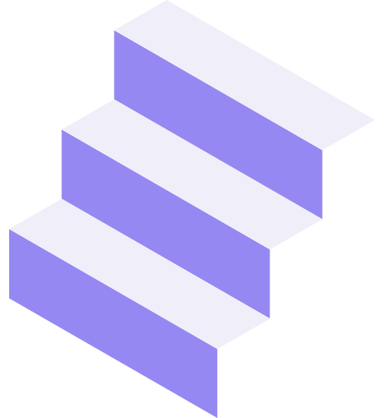
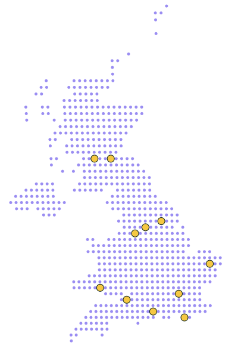
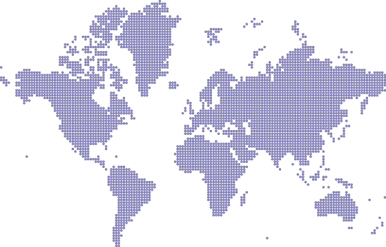

of senior leadership roles in research-adjacent fields are held by white men. Women hold just 15% of managing-director roles globally.
McKinsey & Company (2023)
A national peer-mentoring initiative supporting underrepresented dRTP aspiring leaders
PeerLadder is a new peer-mentoring initiative in the UK.
of senior leadership roles in research-adjacent fields are held by white men. Women hold just 15% of managing-director roles globally.
McKinsey & Company (2023)more patent citations from engineering teams with higher diversity, and +19% more revenue – evidence that diverse teams drive research-technical innovation.
Royal Academy of Engineering (2024) · BSA / APPG on Diversity & Inclusion in STEM (2025)Diverse teams outperform – but only when people feel safe to speak up.
In the chart, teams with high psychological safety (yellow) climb as diversity rises. Without it (lavender), they stall.
Plot adapted from Edmondson, A. (Harvard Business Review, 2022)Regular small-group sessions with clear agendas, action commitments and accountability.
Skills development through practice in facilitation, ally skills and navigating privilege.
Supportive materials and a facilitated space where it's safe to speak about real obstacles.
15 dRTPs from 12 UK institutions. Yellow dots on the map = institutions with a current mentee.

Stick a dot on the location where you'd want to host a PeerLadder-style scheme.

Imposter syndrome? No mentor? No time? Bias? Something else? Write it on a post-it and pin it here.